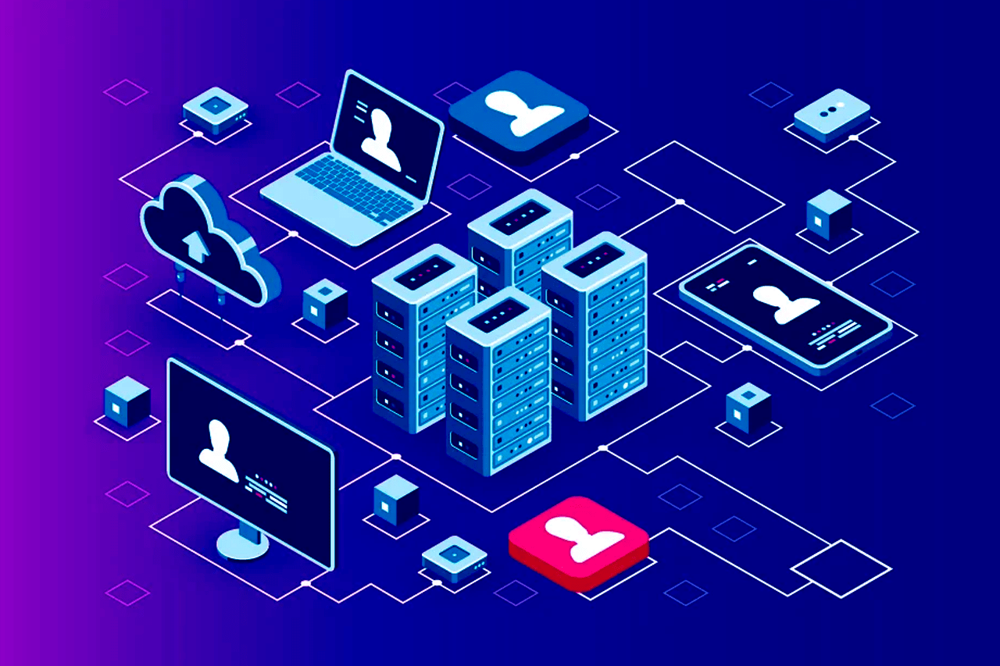

¿Como esto puede ayudar a crear algo que coordine los servicios de transporte entre usuarios de los
diferentes planetas y los conductores espaciales?
-
Desarrollo de la Plataforma Web:
Un desarrollador Full-Stack puede crear la plataforma web o la
aplicación que permita a los usuarios de diferentes planetas solicitar servicios de transporte y a
los
conductores espaciales ofrecer sus servicios. Esto implica la creación de una interfaz de usuario
amigable (front-end) para que los usuarios realicen sus solicitudes y para que los conductores
gestionen
sus servicios.

-
Gestión de Datos y Bases de Datos:
El transporte entre planetas involucra una gran cantidad de datos,
como la ubicación de los usuarios y conductores, las rutas de viaje, los precios y más. Un
desarrollador
Full-Stack puede diseñar y administrar la base de datos que almacena todos estos datos de manera
eficiente.

-
Integración de Tecnologías Externas:
Coordinar el transporte espacial podría requerir la integración de
tecnologías externas, como sistemas de navegación espacial, sistemas de pago, etc. Un desarrollador
Full-Stack puede encargarse de estas integraciones.